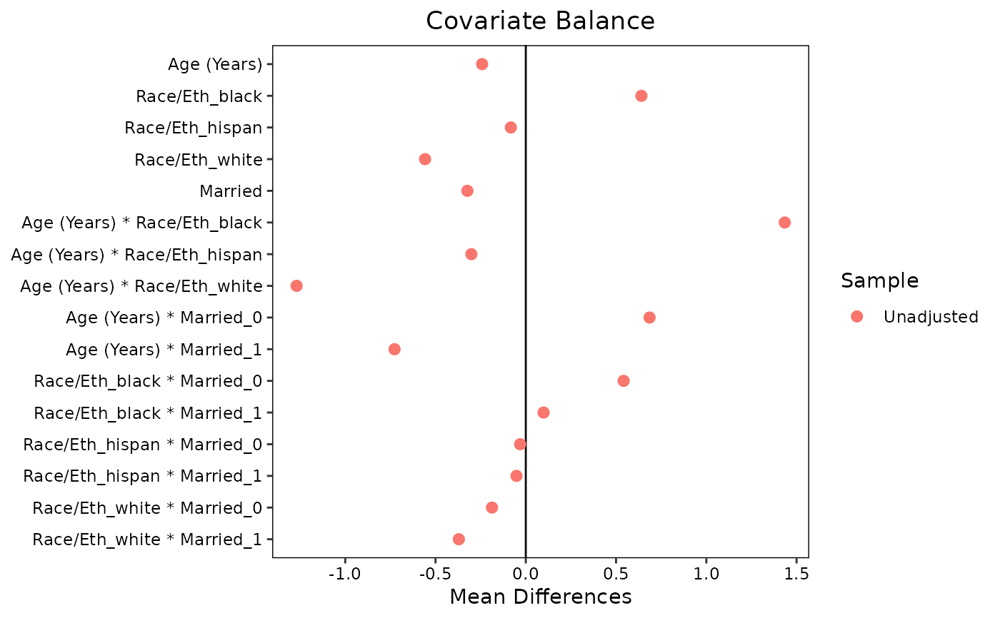

This function extracts variable names from a bal.tab object for use in specifying alternate variable names in love.plot(). Optionally, a file can be written for easy editing of names.
Arguments
- b
a
bal.tabobject; the output of a call tobal.tab().- type
the type of output desired. Can either be
"df"for a data.frame or"vec"for a named vector. See "Value". The default is"vec"unlessfileis notNULL.- file
optional; a file name to save the output if
type = "df". Seeutils::write.csv(), whichvar.name()calls. Must end in.csv.- minimal
whether the output should contain all variable names (i.e., all rows that appear the output of
bal.tab()) or just the unique base variables. See "Details".
Value
If type = "vec", a character vector the the variable names both as the names and the entries.
If type = "df", a data.frame with two columns called "old" and "new", each with the variables as the entries.
If file is not NULL, the output will be returned invisibly.
Details
The goal of the function is to make supplying new variable names to the var.names argument in love.plot() easier. Rather than manually creating a vector or data.frame with all the variable names that one desires to change, one can use var.names() to extract variable names from a bal.tab object and edit the output. Importantly, the output can be saved to a CSV file, which can be easily edited and read back into R for use in love.plot(), as demonstrated in the Example.
When minimal = TRUE, only a minimal set of variables will be output. For example, if the variables analyzed in bal.tab() are age, race, and married, and int = TRUE in bal.tab(), many variables will appear in the output, including expansions of the factor variables, the polynomial terms, and the interactions. Rather than renaming all of these variables individually, one can rename just the three base variables, and all variables that arise from them will be accordingly renamed. Setting minimal = TRUE requests only these base variables.
Note
Not all programs can properly read the Unicode characters for the polynomial terms when requested. These may appear strange in, e.g., Excel, but R will process the characters correctly.
Examples
data(lalonde, package = "cobalt")
b1 <- bal.tab(treat ~ age + race + married, data = lalonde,
int = TRUE)
#> Note: `s.d.denom` not specified; assuming "pooled".
v1 <- var.names(b1, type = "vec", minimal = TRUE)
v1["age"] <- "Age (Years)"
v1["race"] <- "Race/Eth"
v1["married"] <- "Married"
love.plot(b1, var.names = v1)
#> Warning: Standardized mean differences and raw mean differences are present in
#> the same plot. Use the `stars` argument to distinguish between them and
#> appropriately label the x-axis. See `?love.plot` for details.

if (FALSE) { # \dontrun{
b2 <- bal.tab(treat ~ age + race + married + educ + nodegree +
re74 + re75 + I(re74==0) + I(re75==0),
data = lalonde)
var.names(b2, file = "varnames.csv")
##Manually edit the CSV (e.g., in Excel), then save it.
v2 <- read.csv("varnames.csv")
love.plot(b2, var.names = v2)
} # }